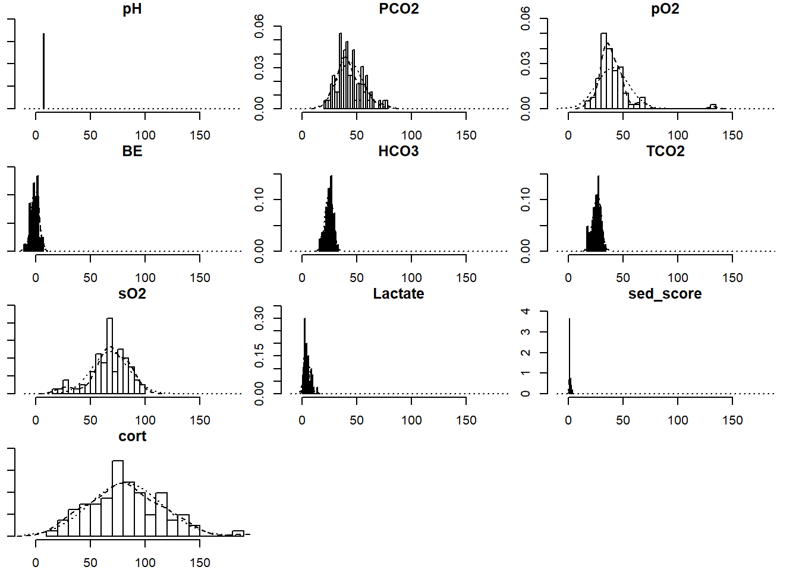
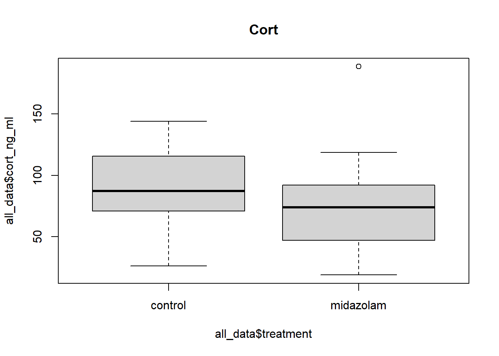
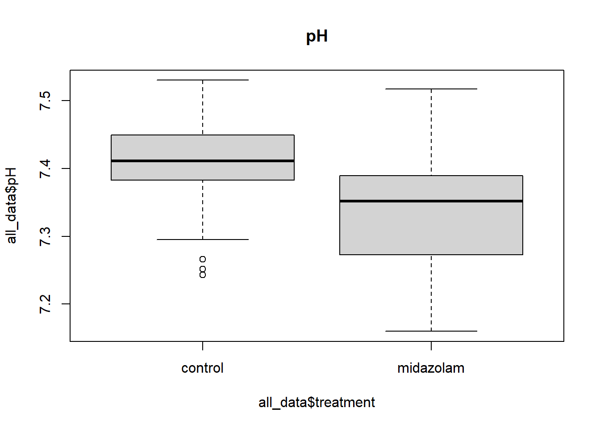
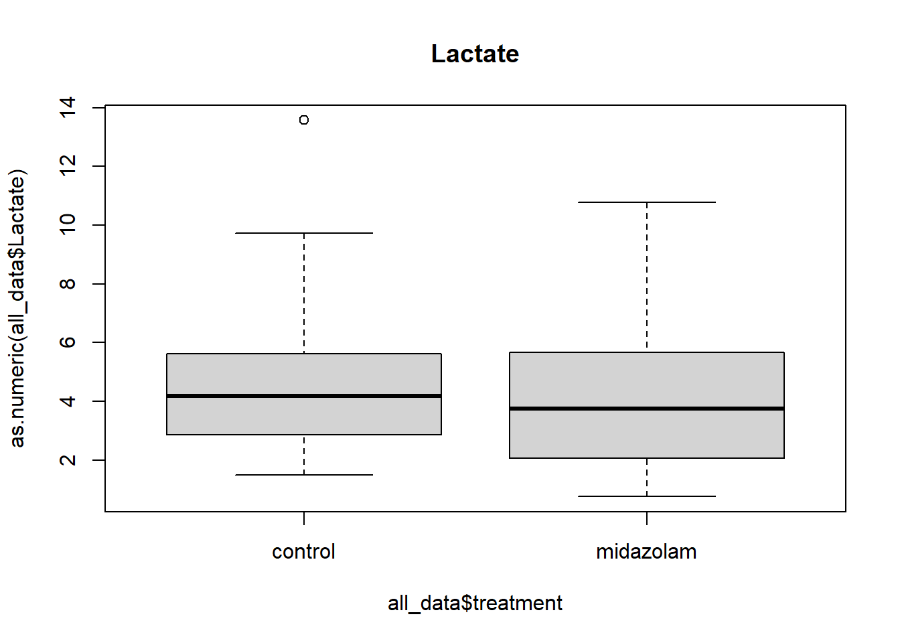

Midazolam Experiment Data Summary and Analysis
Dan Rizzolo
Sept 13, 2019
Last updated: 2022-11-18
Checks: 7 0
Knit directory: spei_midaz_exp/
This reproducible R Markdown analysis was created with workflowr (version 1.7.0). The Checks tab describes the reproducibility checks that were applied when the results were created. The Past versions tab lists the development history.
Great! Since the R Markdown file has been committed to the Git repository, you know the exact version of the code that produced these results.
Great job! The global environment was empty. Objects defined in the global environment can affect the analysis in your R Markdown file in unknown ways. For reproduciblity it’s best to always run the code in an empty environment.
The command set.seed(20221118) was run prior to running
the code in the R Markdown file. Setting a seed ensures that any results
that rely on randomness, e.g. subsampling or permutations, are
reproducible.
Great job! Recording the operating system, R version, and package versions is critical for reproducibility.
Nice! There were no cached chunks for this analysis, so you can be confident that you successfully produced the results during this run.
Great job! Using relative paths to the files within your workflowr project makes it easier to run your code on other machines.
Great! You are using Git for version control. Tracking code development and connecting the code version to the results is critical for reproducibility.
The results in this page were generated with repository version 9ad6438. See the Past versions tab to see a history of the changes made to the R Markdown and HTML files.
Note that you need to be careful to ensure that all relevant files for
the analysis have been committed to Git prior to generating the results
(you can use wflow_publish or
wflow_git_commit). workflowr only checks the R Markdown
file, but you know if there are other scripts or data files that it
depends on. Below is the status of the Git repository when the results
were generated:
Ignored files:
Ignored: .Rhistory
Ignored: .Rproj.user/
Untracked files:
Untracked: data/blood.csv
Untracked: data/cort.csv
Untracked: data/times.csv
Untracked: data/treat.csv
Note that any generated files, e.g. HTML, png, CSS, etc., are not included in this status report because it is ok for generated content to have uncommitted changes.
These are the previous versions of the repository in which changes were
made to the R Markdown
(analysis/midaz_data_summary_workflowr.Rmd) and HTML
(docs/midaz_data_summary_workflowr.html) files. If you’ve
configured a remote Git repository (see ?wflow_git_remote),
click on the hyperlinks in the table below to view the files as they
were in that past version.
| File | Version | Author | Date | Message |
|---|---|---|---|---|
| Rmd | 9ad6438 | DJRIZZ | 2022-11-18 | Publish the initial set of files for the Midazolam Experiment |
The Plan
The data summaries and analyses I present here were done with Program R and Rmarkdown in Rstudio to document the approach to the analysis, the r code (in grayed boxes), and output (lines starting with ##). R and Rmarkdown code files are archived on GitHub (https://github.com/DJRIZZ), if you’d like access, just let me know. Code, data files, Git versioning all managed through the workflowr package (loaded separately in the R Console).
The analysis plan:
- Summarize response variables and examine correlations among them
- Summarize explanatory variables
- Use linear mixed effects models to analyze each of the response
variables we identified apriori as useful measures of the effect of
midazolam: cort, pH, lactate. For the most supported model for each
response, evaluate model assumptions and if model assumptions are met,
estimate treatment effects at times of interest (average, arrival,
induction).
- Use a multivariate analysis to see if the suite of blood parameters, when examined together, separate the data by treatment.
Input files
Four data files (all exported from the project database “spei_ptt_2018.accdb”):
- treat.csv - sex, site, mass, treatment
- blood.csv - blood values and sed scores
- cort.csv - blood cort values
- times.csv - dosing and sampling times for each bird
capt <- read.csv("data/treat.csv") #data on captured birds, including treatment (1 record per bird) NB coding of treatment control vs. saline
blood <- read.csv("data/blood.csv") #blood values (2 records per bird)
cort <- read.csv("data/cort.csv") #cort values (2 records per bird)
times <- read.csv("data/times.csv") #times for captures, blood draw 1, blood draw 1, etc. (1 record per bird)
# some data processing steps
# pull out response variables: blood parameters + cort values
y <- cbind(blood[,6:14], cort=(cort$cort_ng_ml))
# make y numeric
y <- data.matrix(y)
# merge all data into one data frame: capture data, blood values, cort values
all_data <- merge(blood, capt, all.x=TRUE)
all_data <- merge(all_data, cort)Data summaries
Response variable summaries
y_sum <- summary(y)
y_sum pH PCO2 pO2 BE
Min. :7.160 Min. :20.90 Min. : 17.00 Min. :-11.0000
1st Qu.:7.320 1st Qu.:35.70 1st Qu.: 33.00 1st Qu.: -3.0000
Median :7.384 Median :41.05 Median : 38.00 Median : 0.0000
Mean :7.372 Mean :43.58 Mean : 40.33 Mean : -0.5366
3rd Qu.:7.429 3rd Qu.:50.75 3rd Qu.: 46.00 3rd Qu.: 2.0000
Max. :7.530 Max. :76.10 Max. :132.00 Max. : 7.0000
NA's :2
HCO3 TCO2 sO2 Lactate
Min. :16.20 Min. :17.00 Min. :19.00 Min. : 0.760
1st Qu.:22.60 1st Qu.:24.00 1st Qu.:60.00 1st Qu.: 2.590
Median :25.00 Median :26.00 Median :68.50 Median : 3.990
Mean :24.70 Mean :25.99 Mean :68.09 Mean : 4.471
3rd Qu.:27.07 3rd Qu.:28.75 3rd Qu.:80.00 3rd Qu.: 5.668
Max. :32.10 Max. :34.00 Max. :99.00 Max. :13.570
NA's :2 NA's :2
sed_score cort
Min. :1.000 Min. : 18.80
1st Qu.:1.000 1st Qu.: 59.58
Median :1.000 Median : 78.70
Mean :1.427 Mean : 81.71
3rd Qu.:2.000 3rd Qu.:103.12
Max. :4.000 Max. :188.70
Response variable histograms
Response variable distributions
# look at distributions
dists <- multi.hist(y) #function is from r package psych
Distributions look reasonably normal, except Lactate, which is skewed low, and sed_score, which is an integer and so is not expected to be normally distributed.
Response variable correlation plot
Look at correlations among response variables as all were measured from the same set of individual birds.
# check correlations among y variables
# remove na records to allow calculating correlations
y.na <- na.omit(y)
r <- cor(y.na) #create correlation matrix among response variables
r_plot <- corrplot(r, method="number", type="upper") #plot correlations using function from r package
No strong correlations among the responses we identified a priori: pH, lactate, and cort. Because they are not correlated, we can analyze each of these independently. High correlations between pH and pCO2, pCO2 and TCO2, BE and HCP3, etc. require that they be considered together using multivariate methods.
A few more looks at the data…
Response variable box plots by treatment
# box plots for response variables by treatment
box_cort <- boxplot(all_data$cort_ng_ml~all_data$treatment, main="Cort")
box_pH <- boxplot(all_data$pH~all_data$treatment, main="pH")
box_lac <- boxplot(as.numeric(all_data$Lactate)~all_data$treatment, main="Lactate")
Looks like that, without accounting for the effect of time between dosing and sampling, cort was higher in controls than the treatment and that pH was higher in the controls than the treatment. Not much going on with lactate.
To account for the effect of time, create variable for time between dosing and blood sampling for each measurement…
Format date/times and calculate time intervals (in mins):
- capt_inj: time from capture to dosing
- capt_sample1: time from from capture to first blood sample
- capt_sample2: time from capture to second blood sample
- sample1_time: time from dosing to first blood sample
- sample2_time: time from dosing to second blood sample
# summarize explanatory variables: time and mass
# first need to create sample.time variable: time elapsed in minutes between dosing and sampling using times data frame
# str(times)#look at data - times are formatted as factors, need to format as date/time
# first combine date with times (required for r to format them as dates/times)
times$capt_time <- paste(times$date, times$capt_time) #time of capture
times$inj_time <- paste(times$date, times$inj_time) #time of injection
times$blood1_time <- paste(times$date, times$blood1_time) #time of blood sample 1 (arrival)
times$blood2_time <- paste(times$date, times$blood2_time) #time of blood sample 2 (induction)
#str(times) #check the changes
# convert these to dates/times
times$capt_time <- as.POSIXct(times$capt_time, format = "%m/%d/%Y %H:%M")
times$inj_time <- as.POSIXct(times$inj_time, format = "%m/%d/%Y %H:%M")
times$blood1_time <- as.POSIXct(times$blood1_time, format = "%m/%d/%Y %H:%M")
times$blood2_time <- as.POSIXct(times$blood2_time, format = "%m/%d/%Y %H:%M")
#check
#str(times)
#summary(times)
# calculate difference between times
times$capt_inj <- difftime(times$inj_time, times$capt_time, units="mins") #time from capture to dosing
times$capt_sample1 <- difftime(times$blood1_time, times$capt_time, units="mins") #time from capture to sample 1
times$capt_sample2 <- difftime(times$blood2_time, times$capt_time, units="mins") #time from capture to sample 2
times$sample1_time <- difftime(times$blood1_time, times$inj_time, units="mins") #time from dosing to sample 1
times$sample2_time <- difftime(times$blood2_time, times$inj_time, units="mins") #time from dosing to sample 2
# add time to all_data
# pull out time columns into separate data frames with bird_id, then stack 'em and merge into all_data
temp1 <- times[c("id_bird","sample1_time")]
names(temp1) <- c("id_bird", "time")
temp1$sample <- "arrival"
temp2 <- times[c("id_bird","sample2_time")]
names(temp2) <- c("id_bird", "time")
temp2$sample <- "induction"
temp3 <- rbind(temp1, temp2)
all_data <- merge(all_data, temp3)
all_data$time <- as.numeric(all_data$time)Capture and sampling time summaries
# summarize time
time.sum <- times[ ,10:14]
time.sum <- lapply(time.sum, as.numeric)
time.sum <- unclass(time.sum)
time.sum <- as.data.frame(time.sum)
print(summary(time.sum)) resp_rate capt_inj capt_sample1 capt_sample2
Min. :12.00 Min. : 0.000 Min. : 10.00 Min. : 30.0
1st Qu.:20.00 1st Qu.: 3.000 1st Qu.: 28.00 1st Qu.: 50.0
Median :24.00 Median : 8.000 Median : 44.00 Median : 87.0
Mean :25.25 Mean : 8.927 Mean : 50.63 Mean :108.4
3rd Qu.:28.00 3rd Qu.:12.000 3rd Qu.: 63.00 3rd Qu.:134.0
Max. :50.00 Max. :29.000 Max. :136.00 Max. :315.0
NA's :1
sample1_time
Min. : 3.00
1st Qu.: 21.00
Median : 34.00
Mean : 41.71
3rd Qu.: 51.00
Max. :128.00
Average time between capture and dosing was 8.9 min (range: 0 to 29 min). The first blood sample was collected an average of 41.7 min after dosing (range: 3 to 128 min), and the second blood sample an average of 99.4 min after dosing (range: 20 to 311 min).
Explanatory variable summaries
Summary of body mass (g) and time since dosing (time, in minutes)
# summary for time and mass
sum_time <- summary(all_data$time)
sum_time Min. 1st Qu. Median Mean 3rd Qu. Max.
3.00 30.25 48.00 70.57 85.75 311.00 sum_mass <- summary(all_data$mass_g)
sum_mass Min. 1st Qu. Median Mean 3rd Qu. Max.
1273 1475 1564 1563 1623 1933 Explanatory variable boxplots by treatment
box_time <- boxplot(all_data$time~all_data$treatment, main="Time")
box_mass <- boxplot(all_data$mass~all_data$treatment, main="Mass")
Similar masses and times between dosing and sampling between treatments.
Explanatory variable histograms
xvars <- cbind(all_data$time, all_data$mass_g)
xvars <- as.data.frame(xvars)
names(xvars) <- c("time","mass")
xdists <- multi.hist(xvars) #function is from r package psych
Lots of variation in time between dosing and sampling, as expected differences in transport and holding. Not much variation in body mass.
Sample size summary tables
tab.ts1 <- table(all_data$treatment, all_data$sex)
print(tab.ts1)
female male
control 34 8
midazolam 30 10tab.ts2 <- table(all_data$treatment, all_data$sex, all_data$sample)
print(tab.ts2), , = arrival
female male
control 17 4
midazolam 15 5
, , = induction
female male
control 17 4
midazolam 15 5Similar M to F ratios in each treatment. Given the relatively small sample size, and without any hypothesized reason to expect a difference in the effect of midazolam between males and females, I did not consider sex as an explanatory variable. Further, body mass is primarily associated with sex.
Analysis of CORT
We need to account for the effect of the time since dosing on the effect of midazolam. It was not possible to standardize transport and holding time, so time between dosing and sampling has a lot of variation and is best accounted for by treating it as continuous explanatory variable (rather than a categorical variable that classifies samples as “arrival” or “induction”). We expect that time will have a large influence on the effect of the treatment for midazolam-dosed birds but not the controls. To allow the effect of time to differ between treatments, I include time in the model as a main effect and as an interaction with treatment.
The distribution of time values creates a challenge in that most of the data were collected < 150 min after dosing, but there are some measurements out to 311 min. We expect that with time, cort responses in the two treatments will converge as the hypothesized effect of midazolam declines and cort values of the experimental birds increase. For the controls, their increased cort levels at capture will decrease from a maximum to some lower value. As a result, we expect the greatest difference between treatments in cort values will be at the sampling times closest to the dosing time. As time between dosing and sampling increases, we expect the cort levels in dosed birds to increase and the cort response in control birds to decrease.
If we had data uniformly distributed across the full range of sampling times, we could model this pattern and test the hypothesis based on the fit of the model to the data. Because most of the data are < 150 min, patterns in that part of the data set will dictate patterns in the sparser part > 150 min, likely even if we fit a model that allows nonlinear changes in cort with time for each treatment.
I include both linear and nonlinear interactions between treatment and time in the candidate models for cort. I suspect the data will support the less complex model given the sparsity in the data at times > 150 min. Regardless, most of what we can say from the data will relate to cort response between 0 and 150 min.
We have 2 measurements for each individual bird in the data set. To account for the lack of independence between samples collected from the same individuals (samples from the same individual are likely to be correlated, or at least more correlated than 2 samples from 2 different birds), I fit a linear mixed effects model that includes a random effect of bird ID, the (1|bird_id) part of the model. This accounts for the repeated measures on birds.
The model set includes the effects of treatment (midazolam, control), and time between dosing and blood sampling (time, in minutes) and their interaction: in one model as a linear change with time, and in another as a quadratic (nonlinear) change with time. The interactions permit the lines for each treatment in relation to time to have independent patterns (i.e., the model does not force them to be parallel as it would if it included only additive effects of treatment and time).
To assess the fit of these 2 models, I also fit a model with only an intercept and random effect (i.e., it estimates only one mean value for the response). I used the AIC statistic (small sample size version, AICc) to compare these models relative to each other, given the data.
I base inference on model estimated parameters and their 95% confidence interval (CI) relative to zero, where each beta parameter quantifies the effect of the covariate and any beta parameter estimate that includes 0 in its 95% CI has no effect as a likely value.
Cort Model 1: linear change with time
# linear model
cm1 <- lmer(cort_ng_ml~treatment + time + treatment*time + (1|id_bird), data=all_data, REML=FALSE)
# pull out some output to use to calculate AICc later
loglike <- logLik(cm1)[1]
betaCM1 <- coef(summary(cm1))[ ,"Estimate"]
k <- length(betaCM1)
model <- "trt*time"
# summary of model fit
cm1.sum <- summary(cm1)
print(cm1.sum, digits=3)Linear mixed model fit by maximum likelihood ['lmerMod']
Formula: cort_ng_ml ~ treatment + time + treatment * time + (1 | id_bird)
Data: all_data
AIC BIC logLik deviance df.resid
788.9 803.3 -388.4 776.9 76
Scaled residuals:
Min 1Q Median 3Q Max
-1.9450 -0.5433 -0.0574 0.4967 2.7220
Random effects:
Groups Name Variance Std.Dev.
id_bird (Intercept) 632 25.1
Residual 358 18.9
Number of obs: 82, groups: id_bird, 41
Fixed effects:
Estimate Std. Error t value
(Intercept) 99.1791 7.3037 13.58
treatmentmidazolam -34.8260 10.6189 -3.28
time -0.1257 0.0554 -2.27
treatmentmidazolam:time 0.2387 0.0819 2.91
Correlation of Fixed Effects:
(Intr) trtmnt time
trtmntmdzlm -0.688
time -0.525 0.361
trtmntmdzl: 0.356 -0.545 -0.677Cort Model 2: quadratic change with time
# quadratic model
cm2 <- lmer(cort_ng_ml~treatment + time + I(time^2) + treatment*time + treatment*I(time^2) + (1|id_bird), data=all_data, REML=FALSE)Warning: Some predictor variables are on very different scales: consider
rescaling# pull out some output to use to calculate AICc later
loglike <- append(loglike, logLik(cm2)[1])
betaCM2 <- coef(summary(cm2))[ ,"Estimate"]
k <- append(k, length(betaCM2))
model <- append(model, "trt*time^2")
# summary of model fit
cm2.sum <- summary(cm2)
print(cm2.sum, digits=3)Linear mixed model fit by maximum likelihood ['lmerMod']
Formula: cort_ng_ml ~ treatment + time + I(time^2) + treatment * time +
treatment * I(time^2) + (1 | id_bird)
Data: all_data
AIC BIC logLik deviance df.resid
792.0 811.3 -388.0 776.0 74
Scaled residuals:
Min 1Q Median 3Q Max
-1.9796 -0.5692 0.0262 0.5217 2.5041
Random effects:
Groups Name Variance Std.Dev.
id_bird (Intercept) 649 25.5
Residual 346 18.6
Number of obs: 82, groups: id_bird, 41
Fixed effects:
Estimate Std. Error t value
(Intercept) 9.75e+01 1.11e+01 8.77
treatmentmidazolam -3.98e+01 1.53e+01 -2.61
time -7.93e-02 2.35e-01 -0.34
I(time^2) -1.66e-04 8.09e-04 -0.20
treatmentmidazolam:time 3.62e-01 3.03e-01 1.19
treatmentmidazolam:I(time^2) -4.34e-04 1.04e-03 -0.42
Correlation of Fixed Effects:
(Intr) trtmnt time I(t^2) trtmn:
trtmntmdzlm -0.728
time -0.812 0.591
I(time^2) 0.753 -0.549 -0.973
trtmntmdzl: 0.630 -0.792 -0.776 0.755
trtmn:I(^2) -0.587 0.718 0.758 -0.779 -0.964
fit warnings:
Some predictor variables are on very different scales: consider rescalingCort Model 3: null
# null model
cm3 <- lmer(cort_ng_ml~ 1 + (1|id_bird), data=all_data, REML=FALSE)
loglike <- append(loglike, logLik(cm3)[1])
betaCM3 <- coef(summary(cm3))[ ,"Estimate"]
k <- append(k, length(betaCM3))
model <- append(model, "null")
# summary of model fit
cm3.sum <- summary(cm3)
print(cm3.sum, digits=3)Linear mixed model fit by maximum likelihood ['lmerMod']
Formula: cort_ng_ml ~ 1 + (1 | id_bird)
Data: all_data
AIC BIC logLik deviance df.resid
794.4 801.6 -394.2 788.4 79
Scaled residuals:
Min 1Q Median 3Q Max
-1.7001 -0.5746 -0.0422 0.5810 2.6921
Random effects:
Groups Name Variance Std.Dev.
id_bird (Intercept) 626 25.0
Residual 451 21.2
Number of obs: 82, groups: id_bird, 41
Fixed effects:
Estimate Std. Error t value
(Intercept) 81.71 4.56 17.9Cort AICc Model Selection
# create AICc table
tableC <- data.frame(model)
#tableC$LL<-loglike
tableC$neg2LL <- loglike*-2 #calc negative 2 loglikelihood from log likelihood
tableC$n <- nrow(all_data) #number of observations
tableC$k <- k+2 #add 2 parameters for the random ID effect and the residual estimate
tableC$AIC <- tableC$neg2LL + (2*tableC$k) #calculate AIC (not corrected for small sample)
tableC$AICc <- tableC$AIC + ((2*tableC$k^2+2*tableC$k)/(tableC$n-tableC$k-1)) #calc AICc
tableC$AICcmin <- min(tableC$AICc) #find smallest AICc value
tableC$deltaAICc <- tableC$AICc-tableC$AICcmin #calc diff bt smallest AICc and each AICc
tableC$odds <- exp(-0.5*tableC$deltaAICc) #calc model odds, need for model weights
summodds <- sum(tableC$odds) #sum model odds
tableC$AICcwt <- tableC$odds/summodds #calc AICc model weights=strength of support for each
print(tableC, digits=2) #show table model neg2LL n k AIC AICc AICcmin deltaAICc odds AICcwt
1 trt*time 777 82 6 789 790 790 0.0 1.000 0.812
2 trt*time^2 776 82 8 792 794 790 4.0 0.136 0.110
3 null 788 82 3 794 795 790 4.7 0.096 0.078The linear model has a the highest AICc model weight (0.81), indicating strong support from the data. If the effects of time and treatment were not different from zero, the linear treatment model and the null would have similar model weights, or the null would be strongly supported. Parameter estimates from the linear model all have 95% CI bound away from zero.
Cort model diagnostics
Do the data meet the assumptions of the model?
- equal variance of residuals from the linear model
#lmer model diagnostics: do the data meet the model assumptions?
## standardized residuals versus fitted values by treatment
plot(cm1, resid(., scaled=TRUE) ~ fitted(.) | treatment, abline = 0)
- normal distribution of residuals from the linear model
require("lattice")Loading required package: latticeqqmath(cm1, id=0.025)
- fit vs. predicted to assess model fit from the linear model
plot(cm1, cort_ng_ml ~ fitted(.), abline = c(0,1))
All diagnostics for the linear model look good.
Cort adjusted treatment means
Estimate mean values of cort for each treatment at the average value of time (70.573 min), i.e., account for the effect of time on cort…
#treatment means
Ctrt.means<-emmeans(cm1, "treatment")Registered S3 methods overwritten by 'broom':
method from
tidy.glht jtools
tidy.summary.glht jtoolsNOTE: Results may be misleading due to involvement in interactionsprint(Ctrt.means) treatment emmean SE df lower.CL upper.CL
control 90.3 6.40 43.2 77.4 103.2
midazolam 72.3 6.56 43.2 59.1 85.6
Degrees-of-freedom method: kenward-roger
Confidence level used: 0.95 Ctrt.contrast<-emmeans(cm1, pairwise~treatment)NOTE: Results may be misleading due to involvement in interactionsprint(Ctrt.contrast)$emmeans
treatment emmean SE df lower.CL upper.CL
control 90.3 6.40 43.2 77.4 103.2
midazolam 72.3 6.56 43.2 59.1 85.6
Degrees-of-freedom method: kenward-roger
Confidence level used: 0.95
$contrasts
contrast estimate SE df t.ratio p.value
control - midazolam 18 9.17 43.2 1.961 0.0563
Degrees-of-freedom method: kenward-roger plot(Ctrt.means)
At 70.6 minutes after doses were administered, midazolam reduced average cort levels by 20.6% (18 ng/mL) compared to controls that were given saline. The confidence interval around the difference between treatment means was bound away from zero (0.556, 35.44), providing strong inference that midazolam reduced cort levels.
Cort treatment means at average arrival and induction times
#mean treatment values and contrasts at set values of time (where time=42 is average time to arrival, and time=99 is average time to induction)
#means @42 min
cm1.mt42<-emmeans(cm1, "treatment", at=list(time=42))NOTE: Results may be misleading due to involvement in interactionscm1.mt42 treatment emmean SE df lower.CL upper.CL
control 93.9 6.59 47.4 80.6 107.2
midazolam 69.1 6.82 48.9 55.4 82.8
Degrees-of-freedom method: kenward-roger
Confidence level used: 0.95 #contrasts @ 42 min
cm1.ct42<-emmeans(cm1, pairwise~treatment, at=list(time=42))NOTE: Results may be misleading due to involvement in interactionscm1.ct42$emmeans
treatment emmean SE df lower.CL upper.CL
control 93.9 6.59 47.4 80.6 107.2
midazolam 69.1 6.82 48.9 55.4 82.8
Degrees-of-freedom method: kenward-roger
Confidence level used: 0.95
$contrasts
contrast estimate SE df t.ratio p.value
control - midazolam 24.8 9.49 48.2 2.614 0.0119
Degrees-of-freedom method: kenward-roger #means at 99 min
cm1.mt99<-emmeans(cm1, "treatment", at=list(time=99))NOTE: Results may be misleading due to involvement in interactionscm1.mt99 treatment emmean SE df lower.CL upper.CL
control 86.7 6.63 48.3 73.4 100.1
midazolam 75.5 6.77 47.8 61.9 89.2
Degrees-of-freedom method: kenward-roger
Confidence level used: 0.95 #contrasts@ 99 min
cm1.ct99<-emmeans(cm1, pairwise~treatment, at=list(time=99))NOTE: Results may be misleading due to involvement in interactionscm1.ct99$emmeans
treatment emmean SE df lower.CL upper.CL
control 86.7 6.63 48.3 73.4 100.1
midazolam 75.5 6.77 47.8 61.9 89.2
Degrees-of-freedom method: kenward-roger
Confidence level used: 0.95
$contrasts
contrast estimate SE df t.ratio p.value
control - midazolam 11.2 9.48 48 1.181 0.2434
Degrees-of-freedom method: kenward-roger At the average arrival time (42 min), mean cort was 24.8 ng/mL higher in the control group than the treatment group. The 95% CI around this difference did not include zero (6.75, 42.85).
At the average induction time, mean cort was 11.2 ng/ul higher in the control group than the treatment group; however, the 95% CI around this difference overlapped zero (-6.83, 29.23), preventing strong inference of a treatment effect on cort at 90 min post dosing. Thus, by the time of induction, the effect of midazolam had attenuated.
Plot of cort vs. time by treatment from linear model
Cort response in relation to time for each treatment using the linear model.
#fitted values from linear model: cort vs. time
#make new data with values for which model estimates (i.e., predicts, fits) cort
m1newdata<-data.frame(c("midazolam", "control"), time=rep(rep(1:311, each=2),1))
names(m1newdata)<-c("treatment","time")Bootstrap resampling to get 95% CI for model predicted values from the linear mixed effects model.
#predictions with 95% CI from lmer: http://www.remkoduursma.com/post/2017-06-15-bootpredictlme4/
library(merTools) #load this here, else it crashes corrplot
#find random intercept bird that is average
averageObs(cm1) #this is "ref level" bird ID cort_ng_ml treatment time id_bird
1 81.7061 control 70.57317 1987-29011#add this to the new data set for prediction
id_bird<-rep("1987-29011", 622)
#add random effect to new data data frame
m1newdata$id_bird<-id_bird
cm1.fitCI<-predictInterval(cm1, newdata=m1newdata, which="fixed",
level=0.95, n.sims=1000, stat="median",
include.resid.var=F)
#join new data and predictInterval output
cm1.fitCI<-cbind(m1newdata,cm1.fitCI)
#plot fitted values and CI with data
p.cm1fitCI<-ggplot()+
geom_line(data=cm1.fitCI, aes(time, fit, color=treatment), size=2)+
geom_line(data=cm1.fitCI, aes(time, lwr, color=treatment))+
geom_line(data=cm1.fitCI, aes(time, upr, color=treatment))+
geom_ribbon(data=cm1.fitCI, aes(x=time, ymin=lwr, ymax=upr, fill=treatment),
alpha=0.2,
linetype=0,
size=0.5)+
geom_point(data=all_data,aes(time, cort_ng_ml, color=treatment), size=4)+
labs(x="Time since dosing (min)", y="Cort (ng/mL)")+
theme_bw()
p.cm1fitCI
detach("package:merTools", unload=TRUE)### Predicted cort values for treatments from all times from the linear model
#print(cm1.fitCI)Cort results summary
We measured cort levels in blood samples from 41 spectacled eiders, 20 dosed with midazolam and 21 dosed with saline. Birds were dosed 8 min after capture, on average (range: 3 to 28 min). We collected two blood samples from each bird, the first an average of 41.7 min after dosing (range 3 to 128 min), when transported birds arrived at the field camp, and 99.4 min (range: 20 to 311 min) when anesthesia was induced for surgery.
The model specifying a linear interaction between treatment time since dosing was most supported by the data (AICc weight 0.81). Cort levels changed linearly with time since dosing in both treatments, but in opposite directions. At the average time of arrival at the surgical facility (42 min), average cort values were 24.8 ng/mL (95% CI: 6.75, 42.85) in the control treatment (93.9 ng/mL, 95% CI 81.4, 106.4 ug/mL) compared to the midazolam treatment (69.1 ng/mL, 95% CI 56.1, 82.1 ug/mL). At the average time of anesthetic induction, average cort level of the control group (86.7, 95% CI 74.1, 99.3 ug/mL) were no longer different from the average cort level of the midazolam treatment (75.5 ug/mL, 95% CI 62.7, 88.4 ug/mL).
Analysis of Lactate
Lactate summary
summary(all_data$Lactate) Min. 1st Qu. Median Mean 3rd Qu. Max. NA's
0.760 2.590 3.990 4.471 5.668 13.570 2 Note 2 sampled birds without lacate values, need to remove these records.
Take a look at the distribution of lactate values:
#2 records with NA for lactate, remove these
all_data2<-na.omit(all_data)
hist(all_data2$Lactate)
It looks a bit skewy, use a natural log transformation to pull the long tail in…
lnLactate<-log(all_data2$Lactate)
hist(lnLactate)
Log transform looks good. With a log transformation, backtransformation to the original scale provides inference to median values, not means. Continue with fitting linear mixed models, as done for cort:
Lactate Model 1: linear change with time
#linear model
lm1<-lmer(log(Lactate)~treatment + time + treatment*time + (1|id_bird), data=all_data2, REML=FALSE)
#pull out some output to use to calculate AICc later
loglike<-logLik(lm1)[1]
betalm1<-coef(summary(lm1))[ ,"Estimate"]
k<-length(betalm1)
model<-"trt*time"
#summary of model fit
lm1.sum<-summary(lm1)
print(lm1.sum, digits=3)Linear mixed model fit by maximum likelihood ['lmerMod']
Formula: log(Lactate) ~ treatment + time + treatment * time + (1 | id_bird)
Data: all_data2
AIC BIC logLik deviance df.resid
149.1 163.4 -68.5 137.1 74
Scaled residuals:
Min 1Q Median 3Q Max
-2.542 -0.553 0.132 0.552 2.159
Random effects:
Groups Name Variance Std.Dev.
id_bird (Intercept) 0.0781 0.280
Residual 0.2557 0.506
Number of obs: 80, groups: id_bird, 41
Fixed effects:
Estimate Std. Error t value
(Intercept) 1.53196 0.13472 11.37
treatmentmidazolam -0.55708 0.19644 -2.84
time -0.00146 0.00130 -1.12
treatmentmidazolam:time 0.00485 0.00191 2.54
Correlation of Fixed Effects:
(Intr) trtmnt time
trtmntmdzlm -0.686
time -0.663 0.454
trtmntmdzl: 0.451 -0.685 -0.681lm1CI<-confint(lm1)Computing profile confidence intervals ...print(lm1CI, digits=1) 2.5 % 97.5 %
.sig01 0e+00 0.469
.sigma 4e-01 0.647
(Intercept) 1e+00 1.814
treatmentmidazolam -1e+00 -0.163
time -4e-03 0.001
treatmentmidazolam:time 8e-04 0.009Lactate Model 2: quadratic change with time
#quadratic model
lm2<-lmer(log(Lactate)~treatment + time + I(time^2) + treatment*time + treatment*I(time^2) + (1|id_bird), data=all_data2, REML=FALSE)Warning: Some predictor variables are on very different scales: consider
rescaling#pull out some output to use to calculate AICc later
loglike<-append(loglike, logLik(lm2)[1])
betalm2<-coef(summary(lm2))[ ,"Estimate"]
k<-append(k, length(betalm2))
model<-append(model, "trt*time2")
#summary of model fit
lm2.sum<-summary(lm2)
print(lm2.sum, digits=3)Linear mixed model fit by maximum likelihood ['lmerMod']
Formula: log(Lactate) ~ treatment + time + I(time^2) + treatment * time +
treatment * I(time^2) + (1 | id_bird)
Data: all_data2
AIC BIC logLik deviance df.resid
152.2 171.3 -68.1 136.2 72
Scaled residuals:
Min 1Q Median 3Q Max
-2.526 -0.541 0.104 0.505 2.260
Random effects:
Groups Name Variance Std.Dev.
id_bird (Intercept) 0.0896 0.299
Residual 0.2438 0.494
Number of obs: 80, groups: id_bird, 41
Fixed effects:
Estimate Std. Error t value
(Intercept) 1.58e+00 2.13e-01 7.42
treatmentmidazolam -7.49e-01 3.01e-01 -2.49
time -2.79e-03 4.85e-03 -0.57
I(time^2) 4.35e-06 1.68e-05 0.26
treatmentmidazolam:time 9.85e-03 6.49e-03 1.52
treatmentmidazolam:I(time^2) -1.77e-05 2.25e-05 -0.79
Correlation of Fixed Effects:
(Intr) trtmnt time I(t^2) trtmn:
trtmntmdzlm -0.709
time -0.856 0.607
I(time^2) 0.774 -0.549 -0.964
trtmntmdzl: 0.640 -0.852 -0.747 0.720
trtmn:I(^2) -0.579 0.756 0.721 -0.747 -0.957
fit warnings:
Some predictor variables are on very different scales: consider rescalingLactate Model 3: null
#null model
lm3<-lmer(log(Lactate)~ 1 + (1|id_bird), data=all_data2, REML=FALSE)
loglike<-append(loglike, logLik(lm3)[1])
betalm3<-coef(summary(lm3))[ ,"Estimate"]
k<-append(k, length(betalm3))
model<-append(model, "null")Lactate AICc Model Selection
#summary of model fit
lm3.sum<-summary(lm3)
print(lm3.sum, digits=3)Linear mixed model fit by maximum likelihood ['lmerMod']
Formula: log(Lactate) ~ 1 + (1 | id_bird)
Data: all_data2
AIC BIC logLik deviance df.resid
151.7 158.9 -72.9 145.7 77
Scaled residuals:
Min 1Q Median 3Q Max
-2.687 -0.615 0.139 0.575 1.777
Random effects:
Groups Name Variance Std.Dev.
id_bird (Intercept) 0.0619 0.249
Residual 0.3051 0.552
Number of obs: 80, groups: id_bird, 41
Fixed effects:
Estimate Std. Error t value
(Intercept) 1.3264 0.0731 18.1#create AICc table
tableL<-data.frame(model)
#tableL$LL<-loglike
tableL$neg2LL<-loglike*-2 #calc negative 2 loglikelihood from log likelihood
tableL$n<-nrow(all_data2) #number of observations
tableL$k<-k+2 #add 2 parameters for the random ID effect and the residual estimate
tableL$AIC<-tableL$neg2LL + (2*tableL$k) #calculate AIC (not corrected for small sample)
tableL$AICc<-tableL$AIC + ((2*tableL$k^2+2*tableL$k)/(tableL$n-tableL$k-1)) #calc AICc
tableL$AICcmin<-min(tableL$AICc) #find smallest AICc value
tableL$deltaAICc<-tableL$AICc-tableL$AICcmin #calc diff bt smallest AICc and each AICc
tableL$odds<-exp(-0.5*tableL$deltaAICc) #calc model odds, need for model weights
summodds<-sum(tableL$odds) #sum model odds
tableL$AICcwt<-tableL$odds/summodds #calc AICc model weights=strenght of support for each
print(tableL[order(tableL$deltaAICc),], digits=2) #show table model neg2LL n k AIC AICc AICcmin deltaAICc odds AICcwt
1 trt*time 137 80 6 149 150 150 0.0 1.00 0.653
3 null 146 80 3 152 152 150 1.8 0.40 0.261
2 trt*time2 136 80 8 152 154 150 4.1 0.13 0.086The null model was most supported by the data (model weight 0.50) indicating that neither treatment or time clearly captured variation in log lactate values. The linear model received some support from the data (model weight 0.30), indicating that although there was no clear association between log lactate and the explanatory variables in the model, the absence of a relationship was also not clear; thus the result is ambiguous and warrants further examination.
Lactate model diagnostics
Do the data meet the assumptions of the model?
- equal variance of residuals from the linear model
#lmer model diagnostics: do the data meet the model assumptions?
## standardized residuals versus fitted values by treatment
plot(lm1, resid(., scaled=TRUE) ~ fitted(.) | treatment, abline = 0)
- normal distribution of residuals from the linear model
qqmath(lm1, id=0.025)
- fit vs. predicted to assess model fit from the linear model
plot(lm1, log(Lactate) ~ fitted(.), abline = c(0,1))
Residual variance and normal distribution look good. Fit is not great, but this is not surprising given that the null model received the most support from the data.
Lactate adjusted treatment means
Plot mean log(lactate) for each treatment at the average value of time.
#treatment means
LM1trt.means<-emmeans(lm1, "treatment")NOTE: Results may be misleading due to involvement in interactionsprint(LM1trt.means) treatment emmean SE df lower.CL upper.CL
control 1.43 0.105 44.4 1.22 1.64
midazolam 1.21 0.105 42.4 1.00 1.43
Degrees-of-freedom method: kenward-roger
Results are given on the log (not the response) scale.
Confidence level used: 0.95 LM1.contrast<-emmeans(lm1, pairwise~treatment)NOTE: Results may be misleading due to involvement in interactions#plot treatment means and 95% CI
plot(LM1trt.means)
At the average value of time, there was no difference between treatments (difference between treatment means on log scale: 0.23, 95% CI -0.04, 0.51; log lactate values were similar between the control treatment (1.43, 95% CI 1.23, 1.63) and the midazolam treatment (1.20, 95% CI 1.00, 1.39). On the original scale, median lactate values estimate from the model are: control 4.18 (95% CI 3.42, 5.10), midazolam 3.32 (95% CI 2.72, 4.01).
Lactate treatment means at average arrival and induction times
#mean treatment values and contrasts at set values of time (where time=42 is average time to arrival, and time=99 is average time to induction)
#means @ 42 min
lm1.mt42<-emmeans(lm1, "treatment", at=list(time=42))NOTE: Results may be misleading due to involvement in interactionslm1.mt42 treatment emmean SE df lower.CL upper.CL
control 1.47 0.111 50.7 1.248 1.69
midazolam 1.12 0.114 50.9 0.888 1.35
Degrees-of-freedom method: kenward-roger
Results are given on the log (not the response) scale.
Confidence level used: 0.95 #contrasts @ 42 min
lm1.ct42<-emmeans(lm1, pairwise~treatment, at=list(time=42))NOTE: Results may be misleading due to involvement in interactionslm1.ct42$emmeans
treatment emmean SE df lower.CL upper.CL
control 1.47 0.111 50.7 1.248 1.69
midazolam 1.12 0.114 50.9 0.888 1.35
Degrees-of-freedom method: kenward-roger
Results are given on the log (not the response) scale.
Confidence level used: 0.95
$contrasts
contrast estimate SE df t.ratio p.value
control - midazolam 0.353 0.159 50.8 2.222 0.0308
Degrees-of-freedom method: kenward-roger
Results are given on the log (not the response) scale. #mean @ 99 min
lm1.mt99<-emmeans(lm1, "treatment", at=list(time=99))NOTE: Results may be misleading due to involvement in interactionslm1.mt99 treatment emmean SE df lower.CL upper.CL
control 1.39 0.113 52.5 1.16 1.61
midazolam 1.31 0.112 49.4 1.09 1.54
Degrees-of-freedom method: kenward-roger
Results are given on the log (not the response) scale.
Confidence level used: 0.95 #contrasts @ 99 min
lm1.ct99<-emmeans(lm1, pairwise~treatment, at=list(time=99))NOTE: Results may be misleading due to involvement in interactionslm1.ct99$emmeans
treatment emmean SE df lower.CL upper.CL
control 1.39 0.113 52.5 1.16 1.61
midazolam 1.31 0.112 49.4 1.09 1.54
Degrees-of-freedom method: kenward-roger
Results are given on the log (not the response) scale.
Confidence level used: 0.95
$contrasts
contrast estimate SE df t.ratio p.value
control - midazolam 0.0766 0.159 50.9 0.482 0.6321
Degrees-of-freedom method: kenward-roger
Results are given on the log (not the response) scale. At the average arrival time, log lactate was higher by 0.34 (95% CI 0.04, 0.63) in the control treatment (1.47, 95% CI 1.26, 1.68) than in the midazolam treatment (1.13, 95% CI 0.92, 1.34). On the orignal scale, median lactate values from the model for each treatment are: control 4.35 (3.53, 5.37), midazolam 3.10 (2.50, 3.82). [Is a difference of 1.25 whatever the units for lactate are biologically important?]
At the average time of induction, log lactate did not differ between treatments (difference between treatments on the log scale = 0.12, 95% CI -0.17, 0.42). On the orignal scale, treatment median values estimated from the model are: control 4.01 (95% CI 3.25, 4.95), midazolam 3.56 (95% CI 2.89, 4.39).
Plot log(lactate) for each treatment against time
#fitted values from linear model: lactate vs. time
#make new data with values for which model estimates (i.e., predicts, fits) lactate
lm1newdata<-data.frame(c("midazolam", "control"), time=rep(rep(1:311, each=2),1))
names(lm1newdata)<-c("treatment","time")
m1lac_fit<-as.data.frame((predict(lm1, newdata=lm1newdata, re.form=NA)))
lm1fit<-cbind(lm1newdata, m1lac_fit)
names(lm1fit)<-c("treatment","time","pred")
lm1fit<-as.data.frame(lm1fit)
#predictions with MerMod to get 95% CIs
#find random intercept bird that is average
#averageObs(lm1) #this is the only way to get SEs on fixed effects, include "ref level" bird ID
#add this to the new data set for prediction
id_bird<-rep("2007-04138", 622)
#add random effect to new data data frame
lm1newdata$id_bird<-id_bird
#a way forward for predicting from lmer: http://www.remkoduursma.com/post/2017-06-15-bootpredictlme4/
library(merTools)
lm1.fitCI<-predictInterval(lm1, newdata=lm1newdata, which="fixed",
level=0.95, n.sims=1000, stat="median",
include.resid.var=F)
#join new data and predictInterval output
lm1.fitCI<-cbind(lm1newdata,lm1.fitCI)
#remove dup columns
#lm1.fitCI<-cbind(lm1.fitCI[4:9])
p.lm1fitCI<-ggplot()+
geom_line(data=lm1.fitCI, aes(time, fit, color=treatment), size=2)+
geom_line(data=lm1.fitCI, aes(time, lwr, color=treatment))+
geom_line(data=lm1.fitCI, aes(time, upr, color=treatment))+
geom_ribbon(data=lm1.fitCI, aes(x=time, ymin=lwr, ymax=upr, fill=treatment),
alpha=0.2,
linetype=0,
size=0.5)+
geom_point(data=all_data2,aes(time, log(Lactate), color=treatment), size=4)+
labs(x="Time since dosing (min)", y="log(Lactate)")+
theme_bw()
p.lm1fitCI
detach("package:merTools", unload=TRUE)Same general pattern in the data as cort, but with more variation (values of lactate overlap between treatments more than for cort).
Lactate results summary
We did not find strong evidence of an association between treatment and log values of lactate as both the null model, specifying a single value for log lactate, and linear model, that varied by treatment across sampling times, received support from the data (AICc model weights 0.50 vs. 0.38). Based on the linear model, we found evidence of a small difference in median lactate values between treatments at the average time of arrival (controls 4.35, 95% CI 3.53, 5.37; midazolam 3.56, 95% CI 2.89, 4.39); however, this difference is not likely biologically important (??). Median lactate levels did not differ at the average time of induction (control 4.01, 95% CI 3.25, 4.95; midazolam 3.56, 95% CI 2.89, 4.39).
Analysis of pH
pH Model 1: linear change with time
#linear model
cm1<-lmer(pH~treatment + time + treatment*time + (1|id_bird), data=all_data, REML=FALSE)
#pull out some output to use to calculate AICc later
loglike<-logLik(cm1)[1]
betaCM1<-coef(summary(cm1))[ ,"Estimate"]
k<-length(betaCM1)
model<-"trt*time"
#summary of model fit
cm1.sum<-summary(cm1)
print(cm1.sum, digits=3)Linear mixed model fit by maximum likelihood ['lmerMod']
Formula: pH ~ treatment + time + treatment * time + (1 | id_bird)
Data: all_data
AIC BIC logLik deviance df.resid
-184.6 -170.2 98.3 -196.6 76
Scaled residuals:
Min 1Q Median 3Q Max
-2.2079 -0.4702 0.0605 0.5773 2.1417
Random effects:
Groups Name Variance Std.Dev.
id_bird (Intercept) 0.00194 0.0441
Residual 0.00372 0.0610
Number of obs: 82, groups: id_bird, 41
Fixed effects:
Estimate Std. Error t value
(Intercept) 7.42e+00 1.76e-02 422.51
treatmentmidazolam -7.08e-02 2.57e-02 -2.76
time -1.71e-04 1.63e-04 -1.05
treatmentmidazolam:time 2.52e-05 2.40e-04 0.10
Correlation of Fixed Effects:
(Intr) trtmnt time
trtmntmdzlm -0.684
time -0.642 0.439
trtmntmdzl: 0.436 -0.661 -0.679pH Model 2: quadratic change with time
#quadratic model
cm2<-lmer(pH~treatment + time + I(time^2) + treatment*time + treatment*I(time^2) + (1|id_bird), data=all_data, REML=FALSE)Warning: Some predictor variables are on very different scales: consider
rescaling#pull out some output to use to calculate AICc later
loglike<-append(loglike, logLik(cm2)[1])
betaCM2<-coef(summary(cm2))[ ,"Estimate"]
k<-append(k, length(betaCM2))
model<-append(model, "trt*time^2")
#summary of model fit
cm2.sum<-summary(cm2)
print(cm2.sum, digits=3)Linear mixed model fit by maximum likelihood ['lmerMod']
Formula: pH ~ treatment + time + I(time^2) + treatment * time + treatment *
I(time^2) + (1 | id_bird)
Data: all_data
AIC BIC logLik deviance df.resid
-198.5 -179.3 107.3 -214.5 74
Scaled residuals:
Min 1Q Median 3Q Max
-2.3392 -0.5364 0.0761 0.4974 2.0878
Random effects:
Groups Name Variance Std.Dev.
id_bird (Intercept) 0.00185 0.043
Residual 0.00281 0.053
Number of obs: 82, groups: id_bird, 41
Fixed effects:
Estimate Std. Error t value
(Intercept) 7.46e+00 2.52e-02 295.97
treatmentmidazolam -4.44e-02 3.53e-02 -1.26
time -1.37e-03 5.57e-04 -2.45
I(time^2) 4.33e-06 1.93e-06 2.24
treatmentmidazolam:time -5.83e-04 7.43e-04 -0.79
treatmentmidazolam:I(time^2) 2.24e-06 2.56e-06 0.87
Correlation of Fixed Effects:
(Intr) trtmnt time I(t^2) trtmn:
trtmntmdzlm -0.714
time -0.850 0.607
I(time^2) 0.774 -0.553 -0.966
trtmntmdzl: 0.638 -0.841 -0.751 0.725
trtmn:I(^2) -0.582 0.751 0.727 -0.752 -0.958
fit warnings:
Some predictor variables are on very different scales: consider rescalingpH Model 3: null
#null model
cm3<-lmer(pH~ 1 + (1|id_bird), data=all_data, REML=FALSE)
loglike<-append(loglike, logLik(cm3)[1])
betaCM3<-coef(summary(cm3))[ ,"Estimate"]
k<-append(k, length(betaCM3))
model<-append(model, "null")
#summary of model fit
cm3.sum<-summary(cm3)
print(cm3.sum, digits=3)Linear mixed model fit by maximum likelihood ['lmerMod']
Formula: pH ~ 1 + (1 | id_bird)
Data: all_data
AIC BIC logLik deviance df.resid
-178.1 -170.9 92.1 -184.1 79
Scaled residuals:
Min 1Q Median 3Q Max
-2.3542 -0.4106 0.0849 0.5983 1.4014
Random effects:
Groups Name Variance Std.Dev.
id_bird (Intercept) 0.00339 0.0582
Residual 0.00367 0.0606
Number of obs: 82, groups: id_bird, 41
Fixed effects:
Estimate Std. Error t value
(Intercept) 7.3723 0.0113 653pH AICc Model Selection
#create AICc table
tableC<-data.frame(model)
#tableC$LL<-loglike
tableC$neg2LL<-loglike*-2 #calc negative 2 loglikelihood from log likelihood
tableC$n<-nrow(all_data) #number of observations
tableC$k<-k+2 #add 2 parameters for the random ID effect and the residual estimate
tableC$AIC<-tableC$neg2LL + (2*tableC$k) #calculate AIC (not corrected for small sample)
tableC$AICc<-tableC$AIC + ((2*tableC$k^2+2*tableC$k)/(tableC$n-tableC$k-1)) #calc AICc
tableC$AICcmin<-min(tableC$AICc) #find smallest AICc value
tableC$deltaAICc<-tableC$AICc-tableC$AICcmin #calc diff bt smallest AICc and each AICc
tableC$odds<-exp(-0.5*tableC$deltaAICc) #calc model odds, need for model weights
summodds<-sum(tableC$odds) #sum model odds
tableC$AICcwt<-tableC$odds/summodds #calc AICc model weights=strenght of support for each
print(tableC, digits=2) #show table model neg2LL n k AIC AICc AICcmin deltaAICc odds AICcwt
1 trt*time -197 82 6 -185 -184 -197 13 1.5e-03 1.5e-03
2 trt*time^2 -215 82 8 -199 -197 -197 0 1.0e+00 1.0e+00
3 null -184 82 3 -178 -178 -197 19 8.7e-05 8.6e-05The quadratic model has a the highest AICc model weight (0.968), indicating strong support from the data.
pH model diagnostics
Do the data meet the assumptions of the model?
- equal variance of residuals from the quadratic model
#lmer model diagnostics: do the data meet the model assumptions?
## standardized residuals versus fitted values by treatment
plot(cm2, resid(., scaled=TRUE) ~ fitted(.) | treatment, abline = 0)
- normal distribution of residuals from the quadratic model
require("lattice")
qqmath(cm2, id=0.025)
- fit vs. predicted to assess model fit from the quadratic model
plot(cm2, pH ~ fitted(.), abline = c(0,1))
All look reasonably good.
pH adjusted treatment means
Estimate mean values of pH for each treatment at the average value of time (70.573 min), i.e., account for the effect of time on pH
#treatment means
Ctrt.means<-emmeans(cm2, "treatment")Warning: Some predictor variables are on very different scales: consider
rescalingNOTE: Results may be misleading due to involvement in interactionsprint(Ctrt.means) treatment emmean SE df lower.CL upper.CL
control 7.386 0.01610 58.01 7.354 7.418
midazolam 7.312 0.01501 57.90 7.282 7.342
Degrees-of-freedom method: kenward-roger
Confidence level used: 0.95 Ctrt.contrast<-emmeans(cm2, pairwise~treatment)Warning: Some predictor variables are on very different scales: consider
rescalingNOTE: Results may be misleading due to involvement in interactionsplot(Ctrt.means)
At 70.6 minutes after the dose was administered, midazolam decreased blood pH by 0.0684 compared to controls that were given saline. The confidence interval around the difference between treatment means was bound away from zero (0.0254, 0.1114), providing strong inference that midazolam reduced blood pH levels.
pH treatment means at average arrival and induction times
#mean treatment values and contrasts at set values of time (where time=42 is average time to arrival, and time=99 is average time to induction)
#means @ 42 min
cm2.mt42<-emmeans(cm2, "treatment", at=list(time=42))Warning: Some predictor variables are on very different scales: consider
rescalingNOTE: Results may be misleading due to involvement in interactionscm2.mt42 treatment emmean SE df lower.CL upper.CL
control 7.411 0.01366 49.91 7.384 7.439
midazolam 7.346 0.01431 52.02 7.317 7.375
Degrees-of-freedom method: kenward-roger
Confidence level used: 0.95 #contrasts @ 42 min
cm2.ct42<-emmeans(cm2, pairwise~treatment, at=list(time=42))Warning: Some predictor variables are on very different scales: consider
rescalingNOTE: Results may be misleading due to involvement in interactionscm2.ct42$emmeans
treatment emmean SE df lower.CL upper.CL
control 7.411 0.01366 49.91 7.384 7.439
midazolam 7.346 0.01431 52.02 7.317 7.375
Degrees-of-freedom method: kenward-roger
Confidence level used: 0.95
$contrasts
contrast estimate SE df t.ratio p.value
control - midazolam 0.065 0.0198 51 3.284 0.0019
Degrees-of-freedom method: kenward-roger #means @ 99 min
cm2.mt99<-emmeans(cm2, "treatment", at=list(time=99))Warning: Some predictor variables are on very different scales: consider
rescalingNOTE: Results may be misleading due to involvement in interactionscm2.mt99 treatment emmean SE df lower.CL upper.CL
control 7.368 0.02105 70.0 7.326 7.410
midazolam 7.288 0.01869 76.9 7.251 7.325
Degrees-of-freedom method: kenward-roger
Confidence level used: 0.95 #contrasts @ 99 min
cm2.ct99<-emmeans(cm2, pairwise~treatment, at=list(time=99))Warning: Some predictor variables are on very different scales: consider
rescalingNOTE: Results may be misleading due to involvement in interactionscm2.ct99$emmeans
treatment emmean SE df lower.CL upper.CL
control 7.368 0.02105 70.0 7.326 7.410
midazolam 7.288 0.01869 76.9 7.251 7.325
Degrees-of-freedom method: kenward-roger
Confidence level used: 0.95
$contrasts
contrast estimate SE df t.ratio p.value
control - midazolam 0.0802 0.0281 73.1 2.849 0.0057
Degrees-of-freedom method: kenward-roger At the average arrival time (42 min), mean blood pH was 0.063 higher in the control group than the treatment group. The 95% CI around this difference did not include zero (0.0224, 0.1036), providing strong inference that midazolam reduced blood pH levels.
At the average induction time, mean blood pH was 0.0731 higher in the control group than the treatment group; the 95% CI around this difference did not include zero (0.0151, 0.1311), providing strong inference that midazolam reduced blood pH levels.
Plot of pH vs. time by treatment from the quadratic model
pH response in relation to time for each treatment using the linear model.
#fitted values from linear model: pH vs. time
#make new data with values for which model estimates (i.e., predicts, fits) pH
m2newdata<-data.frame(c("midazolam", "control"), time=rep(rep(1:311, each=2),1))
names(m2newdata)<-c("treatment","time")Bootstrap resampling to get 95% CI for model predicted values from the linear mixed effects model.
#predictions with 95% CI from lmer: http://www.remkoduursma.com/post/2017-06-15-bootpredictlme4/
library(merTools) #load this here, else it crashes corrplot
#find random intercept bird that is average
averageObs(cm2) #this is "ref level" bird ID pH treatment time I(time^2) id_bird
1 7.372256 control 70.57317 4980.572 2007-62866#add this to the new data set for prediction
id_bird<-rep("1987-29011", 622)
#add random effect to new data data frame
m2newdata$id_bird<-id_bird
cm2.fitCI<-predictInterval(cm2, newdata=m1newdata, which="fixed",
level=0.95, n.sims=1000, stat="median",
include.resid.var=F)
#join new data and predictInterval output
cm2.fitCI<-cbind(m2newdata,cm2.fitCI)
#plot fitted values and CI with data
p.cm2fitCI<-ggplot()+
geom_line(data=cm2.fitCI, aes(time, fit, color=treatment), size=2)+
geom_line(data=cm2.fitCI, aes(time, lwr, color=treatment))+
geom_line(data=cm2.fitCI, aes(time, upr, color=treatment))+
geom_ribbon(data=cm2.fitCI, aes(x=time, ymin=lwr, ymax=upr, fill=treatment),
alpha=0.2,
linetype=0,
size=0.5)+
geom_point(data=all_data,aes(time, pH, color=treatment), size=4)+
labs(x="Time since dosing (min)", y="pH")+
theme_bw()
p.cm2fitCI
detach("package:merTools", unload=TRUE)### Predicted pH values for treatments from all times from the linear model
#print(cm2.fitCI)pH results summary
The model specifying a quadratic interaction between the blood pH values of treatments and time since dosing was most supported by the data (AICc weight 0.97). This model permitted the shape of the curvilinear association between blood pH and time since dosing to differ between treatments. Patterns in blood pH over time, however, were similar in the control and treatment groups with blood pH highest at times closest to dosing, then declinging until around 150 minutes after dosing. There was an apparent increase in blood pH after 150 minutes, however we had few samples collected after 150 minutes to describe this pattern reliably.
Average blood pH was consistently lower in the midazolam treatment than the control treatment across sampling times. At the average time of arrival at the surgical facility (42 min), average pH values were 7.41 (95% CI: 7.38, 7.44) in the control treatment and 7.35 (95% CI: 7.32, 7.38) in the midazolam treatment. At the average time of anesthetic induction, average pH of the midazolam treatment (7.29, 95% CI: 7.25, 7.33) remained lower than the control group (7.37, 95% CI: 7.32, 7.41).
sessionInfo()R version 4.2.2 (2022-10-31 ucrt)
Platform: x86_64-w64-mingw32/x64 (64-bit)
Running under: Windows 10 x64 (build 19045)
Matrix products: default
locale:
[1] LC_COLLATE=English_United States.utf8
[2] LC_CTYPE=English_United States.utf8
[3] LC_MONETARY=English_United States.utf8
[4] LC_NUMERIC=C
[5] LC_TIME=English_United States.utf8
attached base packages:
[1] stats graphics grDevices utils datasets methods base
other attached packages:
[1] arm_1.13-1 MASS_7.3-58.1 lattice_0.20-45
[4] bootpredictlme4_0.1 ggplot2_3.3.6 jtools_2.2.0
[7] emmeans_1.8.2 lme4_1.1-31 Matrix_1.5-1
[10] psych_2.2.9 corrplot_0.92 knitr_1.40
[13] workflowr_1.7.0
loaded via a namespace (and not attached):
[1] nlme_3.1-160 fs_1.5.2 pbkrtest_0.5.1
[4] httr_1.4.4 rprojroot_2.0.3 tools_4.2.2
[7] backports_1.4.1 bslib_0.4.1 utf8_1.2.2
[10] R6_2.5.1 DBI_1.1.3 colorspace_2.0-3
[13] withr_2.5.0 tidyselect_1.2.0 mnormt_2.1.1
[16] processx_3.8.0 compiler_4.2.2 git2r_0.30.1
[19] cli_3.4.1 sandwich_3.0-2 labeling_0.4.2
[22] sass_0.4.2 scales_1.2.1 mvtnorm_1.1-3
[25] blme_1.0-5 callr_3.7.3 stringr_1.4.1
[28] digest_0.6.30 minqa_1.2.5 rmarkdown_2.17
[31] pkgconfig_2.0.3 htmltools_0.5.3 parallelly_1.32.1
[34] fastmap_1.1.0 highr_0.9 rlang_1.0.6
[37] rstudioapi_0.14 shiny_1.7.3 jquerylib_0.1.4
[40] generics_0.1.3 farver_2.1.1 zoo_1.8-11
[43] jsonlite_1.8.3 broom.mixed_0.2.9.4 dplyr_1.0.10
[46] magrittr_2.0.3 Rcpp_1.0.9 munsell_0.5.0
[49] fansi_1.0.3 abind_1.4-5 furrr_0.3.1
[52] lifecycle_1.0.3 stringi_1.7.8 multcomp_1.4-20
[55] whisker_0.4 yaml_2.3.6 grid_4.2.2
[58] listenv_0.8.0 parallel_4.2.2 promises_1.2.0.1
[61] forcats_0.5.2 crayon_1.5.2 splines_4.2.2
[64] pander_0.6.5 ps_1.7.2 pillar_1.8.1
[67] boot_1.3-28 estimability_1.4.1 codetools_0.2-18
[70] glue_1.6.2 evaluate_0.18 getPass_0.2-2
[73] foreach_1.5.2 vctrs_0.5.0 nloptr_2.0.3
[76] httpuv_1.6.6 gtable_0.3.1 purrr_0.3.5
[79] tidyr_1.2.1 future_1.28.0 cachem_1.0.6
[82] xfun_0.34 mime_0.12 xtable_1.8-4
[85] broom_1.0.1 coda_0.19-4 later_1.3.0
[88] survival_3.4-0 tibble_3.1.8 iterators_1.0.14
[91] globals_0.16.1 ellipsis_0.3.2 TH.data_1.1-1